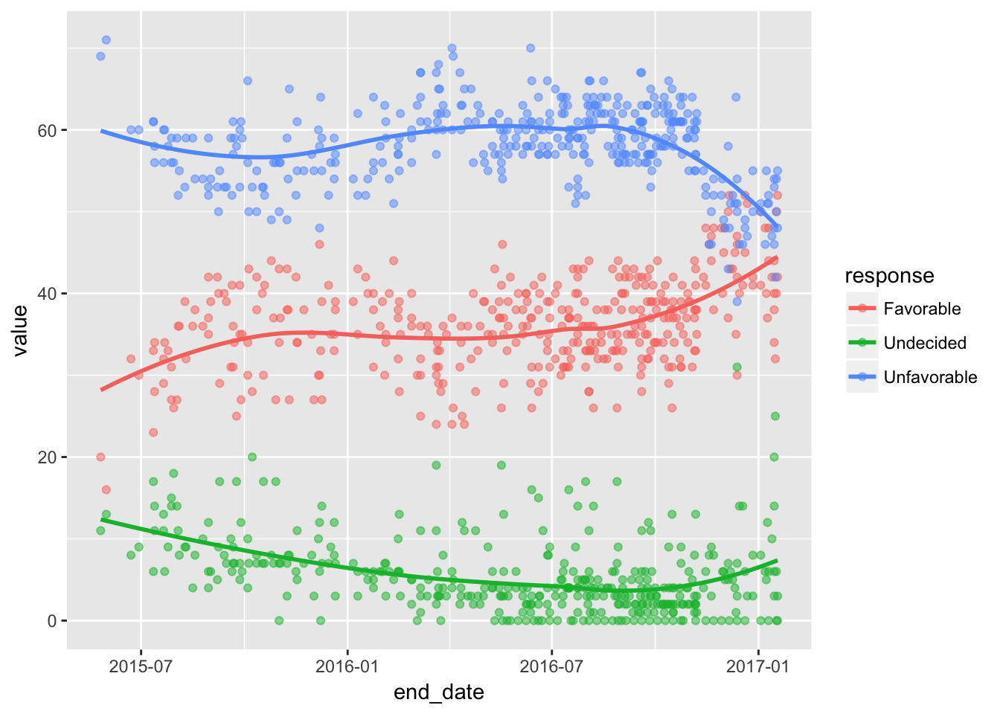
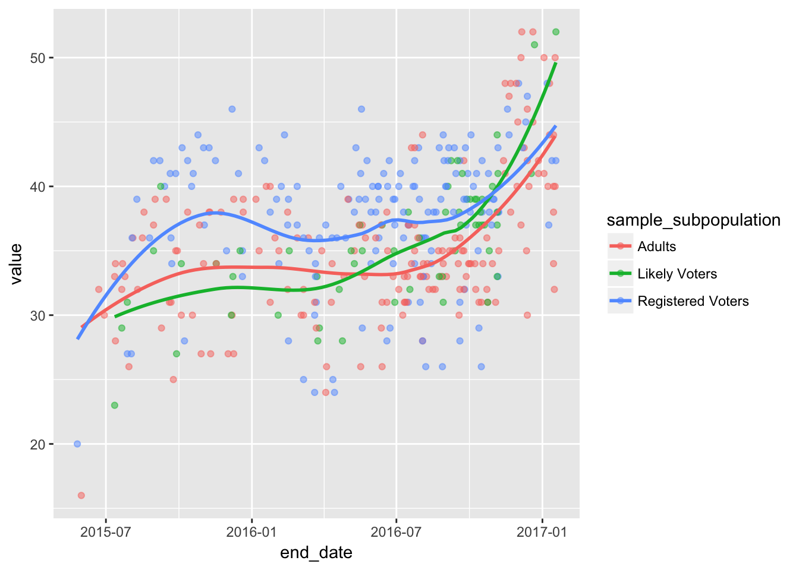

Pollster Examples
Jeffrey Arnold
This document provides a few examples that use the pollstR package.
library("pollstR")
library("tidyverse")## Loading tidyverse: ggplot2
## Loading tidyverse: tibble
## Loading tidyverse: tidyr
## Loading tidyverse: readr
## Loading tidyverse: purrr
## Loading tidyverse: dplyr## Conflicts with tidy packages ----------------------------------------------## filter(): dplyr, stats
## is_null(): purrr, testthat
## lag(): dplyr, stats
## matches(): dplyr, testthatProduce a Plot of Chart
The pollstR package can be used to reproduce plots in the charts. This will use the Donald Trump favorable rating as the example. This chart has the slug donald-trump-favorable-rating
slug <- "donald-trump-favorable-rating"
polls <- pollster_charts_polls(slug)[["content"]]
trendlines <- pollster_charts_trendlines(slug)[["content"]]Plot the points for each response (Favorable, Unfavorable, and Undecided) and fit a loess smoother through them:
.data <- gather(polls, response, value,
Favorable, Unfavorable, Undecided) %>%
mutate(value = if_else(is.na(value), 0, value))
ggplot() +
geom_point(data = .data,
aes(x = end_date, y = value, color = response),
alpha = 0.5) +
geom_smooth(data = .data, method = "loess", se = FALSE,
aes(x = end_date, y = value, color = response)) Plot the points with the Pollster trendlines:
ggplot() +
geom_point(data = .data,
mapping = aes(x = end_date, y = value, color = response),
alpha = 0.5) +
geom_line(data = trendlines,
mapping = aes(x = date, y = value, color = label), size = 1.5)
For each of the subpopulations (Likely Voter, Registered Voters, Adults), plot the favorability rating:
ggplot(data = filter(.data, response == "Favorable"),
mapping = aes(x = end_date, y = value, color = sample_subpopulation)) +
geom_point(alpha = 0.5) +
geom_smooth(method = "loess", se = FALSE)
Questions
An example of a single question item:
questions <- pollster_questions()
questions$content$items[[1]]## $slug
## [1] "17-VA-Gov-GE-RvP"
##
## $name
## [1] "2017 Virginia Gubernatorial GE"
##
## $tags
## list()
##
## $charts
## list()
##
## $election_date
## NULL
##
## $n_polls
## [1] 1
##
## $created_at
## [1] "2017-02-16T18:23:56.000Z"
##
## $responses
## $responses[[1]]
## $responses[[1]]$label
## [1] "Riggleman"
##
## $responses[[1]]$name
## [1] "Denver Riggleman"
##
## $responses[[1]]$party
## [1] "Republican"
##
## $responses[[1]]$incumbent
## [1] FALSE
##
##
## $responses[[2]]
## $responses[[2]]$label
## [1] "Perriello"
##
## $responses[[2]]$name
## [1] "Tom Perriello"
##
## $responses[[2]]$party
## [1] "Democrat"
##
## $responses[[2]]$incumbent
## [1] FALSE
##
##
## $responses[[3]]
## $responses[[3]]$label
## [1] "Other"
##
## $responses[[3]]$name
## [1] "Other"
##
## $responses[[3]]$party
## NULL
##
## $responses[[3]]$incumbent
## [1] FALSE
##
##
## $responses[[4]]
## $responses[[4]]$label
## [1] "Undecided"
##
## $responses[[4]]$name
## [1] "Undecided"
##
## $responses[[4]]$party
## NULL
##
## $responses[[4]]$incumbent
## [1] FALSECharts
An example of a single chart item:
charts <- pollster_charts()
charts$content$items[[1]]## $slug
## [1] "trump-job-approval"
##
## $title
## [1] "Trump Job Approval"
##
## $url
## [1] "http://elections.huffingtonpost.com/pollster/trump-job-approval"
##
## $created_at
## [1] "2017-02-17T20:12:19.000Z"
##
## $tags
## list()
##
## $pollster_estimates
## $pollster_estimates[[1]]
## $pollster_estimates[[1]]$algorithm
## [1] "lowess"
##
## $pollster_estimates[[1]]$created_at
## [1] "2017-02-20T04:41:11.673Z"
##
## $pollster_estimates[[1]]$datetime
## [1] "2017-02-17T20:12:19.000Z"
##
## $pollster_estimates[[1]]$values
## $pollster_estimates[[1]]$values$item_name
## [1] "value"
##
## $pollster_estimates[[1]]$values$key_name
## [1] "label"
##
## $pollster_estimates[[1]]$values$hash
## $pollster_estimates[[1]]$values$hash$Approve
## [1] 44.6073
##
## $pollster_estimates[[1]]$values$hash$Disapprove
## [1] 50.5299
##
## $pollster_estimates[[1]]$values$hash$Undecided
## [1] 5.4944
##
##
##
## $pollster_estimates[[1]]$lowess_parameters
## $pollster_estimates[[1]]$lowess_parameters$f
## [1] 0.7
##
## $pollster_estimates[[1]]$lowess_parameters$iter
## [1] 3
##
## $pollster_estimates[[1]]$lowess_parameters$delta
## [1] 0.01
##
##
##
##
## $pollster_estimate_summary
## NULL
##
## $question
## $question$slug
## [1] "00c -Pres-45-Trump - Job Approval - National"
##
## $question$name
## [1] "Trump, Donald - USPres - Job Approval"
##
## $question$tags
## list()
##
## $question$charts
## $question$charts[[1]]
## [1] "trump-job-approval"
##
##
## $question$election_date
## NULL
##
## $question$n_polls
## [1] 69
##
## $question$created_at
## [1] "2017-01-10T18:32:55.000Z"
##
## $question$responses
## $question$responses[[1]]
## $question$responses[[1]]$label
## [1] "Approve"
##
## $question$responses[[1]]$name
## [1] "Approve"
##
## $question$responses[[1]]$party
## NULL
##
## $question$responses[[1]]$incumbent
## [1] FALSE
##
##
## $question$responses[[2]]
## $question$responses[[2]]$label
## [1] "Disapprove"
##
## $question$responses[[2]]$name
## [1] "Disapprove"
##
## $question$responses[[2]]$party
## NULL
##
## $question$responses[[2]]$incumbent
## [1] FALSE
##
##
## $question$responses[[3]]
## $question$responses[[3]]$label
## [1] "Undecided"
##
## $question$responses[[3]]$name
## [1] "Undecided"
##
## $question$responses[[3]]$party
## NULL
##
## $question$responses[[3]]$incumbent
## [1] FALSEPolls
An example of a single poll item:
polls <- pollster_polls()
polls$content$items[[1]]## $slug
## [1] "gallup-27126"
##
## $start_date
## [1] "2017-02-14"
##
## $end_date
## [1] "2017-02-16"
##
## $created_at
## [1] "2017-02-17T23:54:51.000Z"
##
## $updated_at
## [1] "2017-02-17T18:54:51.000Z"
##
## $survey_house
## [1] "Gallup"
##
## $mode
## [1] "Live Phone"
##
## $url
## [1] "http://www.gallup.com/poll/201617/gallup-daily-trump-job-approval.aspx"
##
## $partisanship
## [1] "Nonpartisan"
##
## $partisan_affiliation
## [1] "None"
##
## $poll_questions
## $poll_questions[[1]]
## $poll_questions[[1]]$text
## [1] ""
##
## $poll_questions[[1]]$question
## $poll_questions[[1]]$question$slug
## [1] "00c -Pres-45-Trump - Job Approval - National"
##
## $poll_questions[[1]]$question$name
## [1] "Trump, Donald - USPres - Job Approval"
##
## $poll_questions[[1]]$question$tags
## list()
##
## $poll_questions[[1]]$question$charts
## $poll_questions[[1]]$question$charts[[1]]
## [1] "trump-job-approval"
##
##
## $poll_questions[[1]]$question$election_date
## NULL
##
## $poll_questions[[1]]$question$n_polls
## [1] 69
##
## $poll_questions[[1]]$question$created_at
## [1] "2017-01-10T18:32:55.000Z"
##
## $poll_questions[[1]]$question$responses
## $poll_questions[[1]]$question$responses[[1]]
## $poll_questions[[1]]$question$responses[[1]]$label
## [1] "Approve"
##
## $poll_questions[[1]]$question$responses[[1]]$name
## [1] "Approve"
##
## $poll_questions[[1]]$question$responses[[1]]$party
## NULL
##
## $poll_questions[[1]]$question$responses[[1]]$incumbent
## [1] FALSE
##
##
## $poll_questions[[1]]$question$responses[[2]]
## $poll_questions[[1]]$question$responses[[2]]$label
## [1] "Disapprove"
##
## $poll_questions[[1]]$question$responses[[2]]$name
## [1] "Disapprove"
##
## $poll_questions[[1]]$question$responses[[2]]$party
## NULL
##
## $poll_questions[[1]]$question$responses[[2]]$incumbent
## [1] FALSE
##
##
## $poll_questions[[1]]$question$responses[[3]]
## $poll_questions[[1]]$question$responses[[3]]$label
## [1] "Undecided"
##
## $poll_questions[[1]]$question$responses[[3]]$name
## [1] "Undecided"
##
## $poll_questions[[1]]$question$responses[[3]]$party
## NULL
##
## $poll_questions[[1]]$question$responses[[3]]$incumbent
## [1] FALSE
##
##
##
##
## $poll_questions[[1]]$sample_subpopulations
## $poll_questions[[1]]$sample_subpopulations[[1]]
## $poll_questions[[1]]$sample_subpopulations[[1]]$name
## [1] "Adults"
##
## $poll_questions[[1]]$sample_subpopulations[[1]]$observations
## [1] 1500
##
## $poll_questions[[1]]$sample_subpopulations[[1]]$margin_of_error
## [1] 3
##
## $poll_questions[[1]]$sample_subpopulations[[1]]$responses
## $poll_questions[[1]]$sample_subpopulations[[1]]$responses[[1]]
## $poll_questions[[1]]$sample_subpopulations[[1]]$responses[[1]]$text
## [1] "Approve"
##
## $poll_questions[[1]]$sample_subpopulations[[1]]$responses[[1]]$pollster_label
## [1] "Approve"
##
## $poll_questions[[1]]$sample_subpopulations[[1]]$responses[[1]]$value
## [1] 38
##
##
## $poll_questions[[1]]$sample_subpopulations[[1]]$responses[[2]]
## $poll_questions[[1]]$sample_subpopulations[[1]]$responses[[2]]$text
## [1] "Disapprove"
##
## $poll_questions[[1]]$sample_subpopulations[[1]]$responses[[2]]$pollster_label
## [1] "Disapprove"
##
## $poll_questions[[1]]$sample_subpopulations[[1]]$responses[[2]]$value
## [1] 56